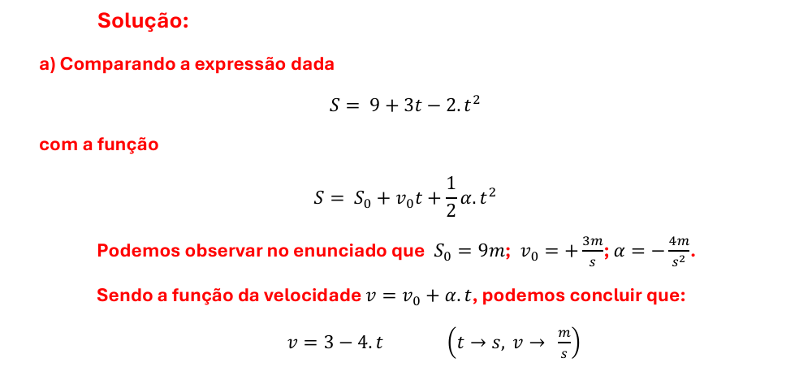
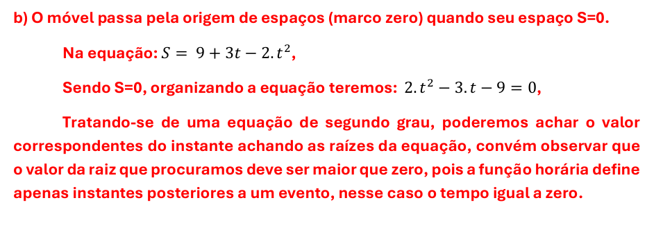
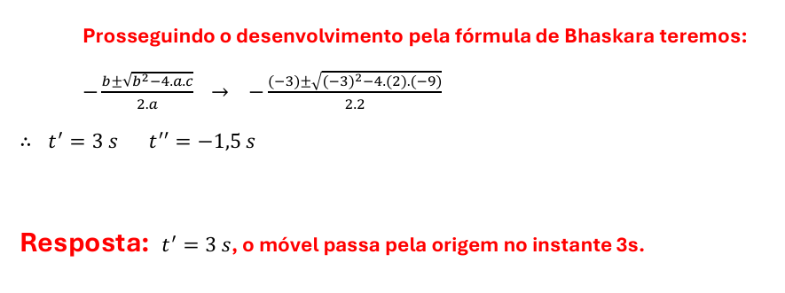

Problema de Matemática contextualizado na Física (Equações de 1° e 2° grau)
Os problemas da “Ciência que estuda a natureza” estão em todos os lugares, e podem ser discutidos por vários ângulos e sobre perspectivas de análises diferentes. Um corpo e suas formas de energia, pode revelar cálculos complexos que podem explorar a Mecânica, Termologia, Óptica, Geometria da Luz e ondas, Eletromagnetismo, Relatividade entre infinitas fórmulas e conceitos matemáticos clássicos ou modernos. Convém destacar que a matemática e todo o seu saber sempre será o alicerce para o desenvolvimento dos cálculos físicos
Noções matemáticas (Resumo de Equações de 1° e 2° grau).
Para iniciar, precisamos lembrar dois tipos fundamentais de equações:
As equações do primeiro grau e as equações do segundo grau.
Tem a forma geral y = ax + b. O gráfico é sempre uma reta. O coeficiente a determina a inclinação; b determina o ponto onde a reta cruza o eixo vertical. A ideia central é que a relação entre as variáveis é linear: cada unidade que x aumenta, y aumenta (ou diminui) sempre na mesma proporção. Quando o a da função é maior que zero, temos uma função crescente. Quando o a da função é menor que zero, temos uma função decrescente.

Tem a forma y = ax² + bx + c.
O gráfico é uma parábola.
A variável aparece elevada ao quadrado, o que faz o valor de y crescer (ou diminuir) de maneira, não linear.
A parábola pode abrir para cima (a > 0) ou para baixo (a menor 0).
Se o delta da função for maior que zero teremos duas raízes reais.
Se o delta da função for igual a zero teremos somente uma raiz.
Se o delta da função for menor que zero não existirá raízes.

Esses dois tipos de equação serão essenciais para interpretarmos os movimentos na Física.
Função da velocidade, contextualizando cálculos Físicos (equação de 1° grau). Como chegamos na fórmula da velocidade no MUV? Sabemos que aceleração é a razão entre a variação da velocidade e o tempo: Podemos reorganizar essa relação para encontrar a velocidade final: Como a variação de velocidade é a diferença entre a velocidade final v e a velocidade inicial v0: Isolando v: Essa é uma equação do primeiro grau na variável t. É uma relação linear, onde a velocidade aumenta ou diminui sempre na mesma proporção ao passar do tempo.” Seu gráfico será do tipo:

“Quando desenhamos o gráfico de v=v0+αt, obtemos uma reta.
O coeficiente angular, α é a inclinação da reta → representa a aceleração.
O coeficiente linear v0 é o ponto onde a reta intercepta o eixo da velocidade → velocidade no instante inicial.
Portanto, esse gráfico mostra que:
➡ Quando a aceleração é positiva, a velocidade cresce linearmente.
➡ Quando a aceleração é negativa, temos uma reta descendente.
➡ Se a aceleração é zero, a reta é horizontal (movimento uniforme).”
Existem várias formas de explicar a origem da função horária, por derivação, integração, encadeamento, análise matemática, análises geométricas, entre ouros métodos, para evitar complexidades desnecessárias será abordado a forma mais simples de compreender a função horária do movimento. A função horária da posição no movimento uniformemente variado (MUV) pode ser deduzida pela análise das áreas nos gráficos de velocidade × tempo. A ideia central é que a área sob a curva v(t) representa o deslocamento, e somando essas áreas conseguimos chegar à fórmula.

A área azul representa o retângulo v0.t , que corresponde ao deslocamento devido à velocidade inicial constante. A área verde representa o triângulo ,que corresponde ao deslocamento adicional causado pela aceleração. A soma dessas áreas gera a fórmula completa da posição
Aceleração → inclinação da reta (quanto mais inclinada, maior a variação da velocidade). Espaço → área sob a reta (retângulo + triângulo). A hipotenusa do triângulo é a própria função da velocidade, e a área até ela traduz o deslocamento acumulado.
No Movimento Uniforme (MU), a velocidade é constante: Agora, no MUV, a velocidade já não é constante, mas varia ao longo do tempo: Se pegar a fórmula do MU e tentar usá-la no MUV, substituindo a velocidade instantânea pela expressão acima, obtém-se: Essa expressão se parece muito com a função horária real: Mas precisa de uma justificativa para o surgimento do fator ½ alinhando a aceleração e o tempo.
t² assume velocidade final o tempo todo.Velocidade cresce gradualmente. Área correta no gráfico vt é um trapézio. Termo adicional é um triângulo. deve ser reduzida pela metade, porque representa a área de um triângulo.



As funções de primeiro e segundo grau são ferramentas indispensáveis para os cálculos Físicos, convém observar que a Física procura explicar os eventos em todas as perspectivas, aninhando cálculos e fórmulas muitas vezes de forma complexa, no entanto a Matemática e seus fundamentos são o alicerce de todo o conhecimento, dominar a matemática é dominar a arte do saber.
ChatGPT, Microsoft copilot, Google AI, Os fundamentos da Física, Ramalho, Ivan, Nicolau, Toledo. Volume um, mecânica, páginas 44,45. (exercícios resolvidos, R.14).